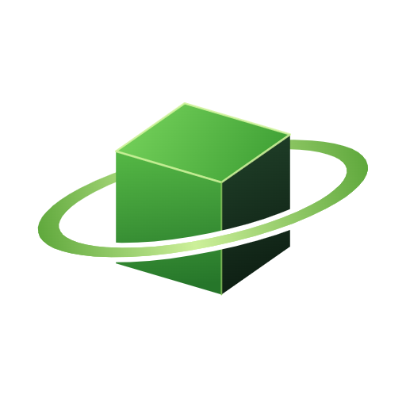

Experiência VR no
Gabura
VERSO
Ajude a tripulação a consertar a nave, capture clones fujões e acenda as três luzes para voltar para casa.
Feito para VR · Meta Quest 3S
Versão adaptada para PC
Funciona offline